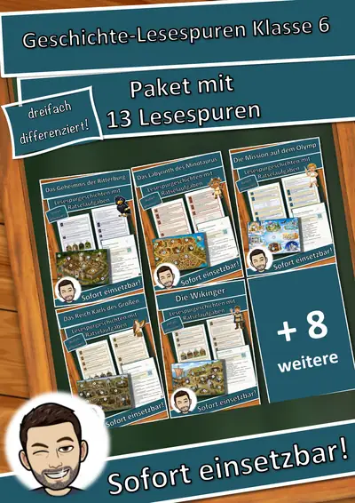
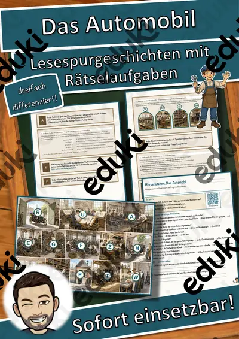
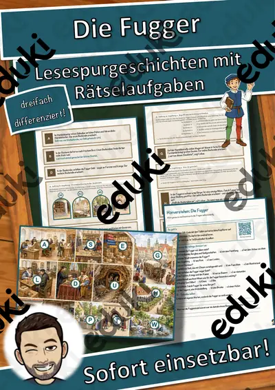
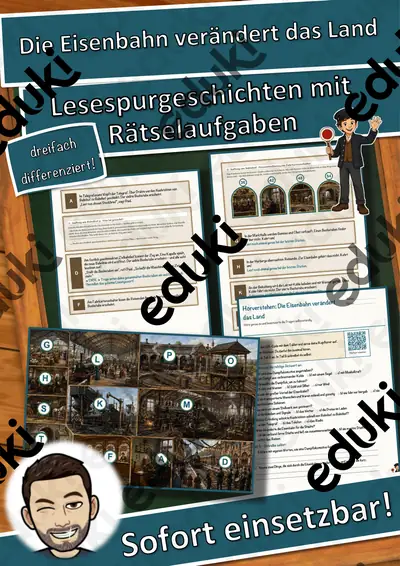
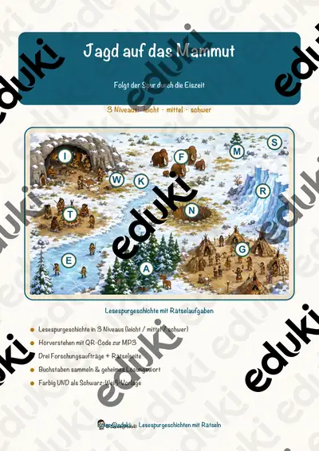

Materialpaket Lesespurgeschichten Geschichte Klasse 8: 6 Lesespuren mit Rätselaufgaben, dreifach differenziert

Materialpaket Lesespurgeschichten Geschichte Klasse 7: 12 Lesespuren mit Rätselaufgaben, dreifach differenziert

Materialpaket Lesespurgeschichten Geschichte Klasse 6: 13 Lesespuren mit Rätselaufgaben, dreifach differenziert

Materialpaket Lesespurgeschichten Geschichte Klasse 5: 5 Lesespuren mit Rätselaufgaben, dreifach differenziert

Lesespur: Die Märzrevolution 1848: Freiheit, Einheit und die Paulskirche – Lesespurgeschichte mit Rätseln (Klasse 8)

Lesespur: Die Novemberrevolution 1918: vom Kaiserreich zur Demokratie – Lesespurgeschichte mit Rätseln (Klasse 9)

Lesespur: Der Kalender: wie Caesar und Gregor das Jahr ordneten – Lesespurgeschichte mit Rätseln (Klasse 7)

Lesespur: Der Mann aus dem Eis: ein Gletscherfund aus der Jungsteinzeit – Lesespurgeschichte mit Rätseln (Klasse 6)

Lesespur: Die Saturnalien: das Winterfest der Römer – Lesespurgeschichte mit Rätseln (Klasse 6)

Lesespur: Ein Winter im Dorf des Mittelalters: Bauern und Grundherr – Lesespurgeschichte mit Rätseln (Klasse 7)

Lesespur: Der Hungerwinter 1947: Leben nach dem Krieg – Lesespurgeschichte mit Rätseln (Klasse 9)

Lesespur: Der Mauerfall: vom geteilten Land zur Einheit – Lesespurgeschichte mit Rätseln (Klasse 10)

Lesespur: Der Erste Weltkrieg: vom Kriegsbeginn zum Waffenstillstand – Lesespurgeschichte mit Rätseln (Klasse 9)

Lesespur: Die Kelten: Leben in einem keltischen Dorf – Lesespurgeschichte mit Rätseln (Klasse 6)

Lesespur: Die Wikinger – Lesespurgeschichte mit Rätseln (Klasse 6)

Lesespur: Der Pirat: Ein Abenteuer auf hoher See – Lesespurgeschichte mit Rätseln (Klasse 5)

Lesespur: Das Automobil – Lesespurgeschichte mit Rätseln (Klasse 8)

Lesespur: Olympia in der Antike – Lesespurgeschichte mit Rätseln (Klasse 7)

Lesespur: Die Weimarer Republik – Lesespurgeschichte mit Rätseln (Klasse 8)

Lesespur: Das Handwerk und die Zünfte – Lesespurgeschichte mit Rätseln (Klasse 7)

Lesespur: Das antike Rom: die Republik – Lesespurgeschichte mit Rätseln (Klasse 7)

Lesespur: Die Fugger: Kaufleute und Bankiers – Lesespurgeschichte mit Rätseln (Klasse 7)

Lesespur: Die Eisenbahn verändert das Land – Lesespurgeschichte mit Rätseln (Klasse 8)

Lesespur: Die Französische Revolution – Lesespurgeschichte mit Rätseln (Klasse 8)

Lesespur: Das Deutsche Kaiserreich – Lesespurgeschichte mit Rätseln (Klasse 8)

Lesespur: Die Industrialisierung – Lesespurgeschichte mit Rätseln (Klasse 8)

Lesespur: Der Sonnenkönig – Lesespurgeschichte mit Rätseln (Klasse 7)

Lesespur: Die Reformation – Lesespurgeschichte mit Rätseln (Klasse 7)

Lesespur: Das Geheimnis der Pyramide (Ägypten) – Lesespurgeschichte mit Rätseln (Klasse 5)

Lesespur: Jagd auf das Mammut – Lesespurgeschichte mit Rätseln (Klasse 5)
Keine Materialien gefunden – versuch einen anderen Suchbegriff oder Filter.
Geschichte erzählen statt aufzählen
Jahreszahlen bleiben selten hängen, Geschichten schon. Die Materialien dieser Seite erzählen deshalb historische Zusammenhänge als Lesespuren: Die Klasse verfolgt einen Weg durch eine Epoche, wird an Stationen vor Entscheidungen gestellt und sammelt am Ende ein Lösungswort. Dahinter steht ein Sachtext, der zu den Themen der Lehrpläne passt.
Die Lesespuren setzen kein Vorwissen voraus, erklären Fachbegriffe an der Stelle, an der sie gebraucht werden, und lassen sich deshalb als Einstieg wie als Wiederholung nutzen. Kopiert wird nur das, was die Klasse braucht, die Lösungen liegen bei.
Klasse 3 bis 5: Götter und früheste Zeiten
Schon in der Grundschule gibt es Material zur griechischen Mythologie: „Artemis“, „Zeus“, „Hermes“ und „Demeter“, gebündelt im „Materialpaket Griechische Götter“. In Klasse 5 folgen Epochen der Frühgeschichte, etwa „Jagd auf das Mammut“, „Die Reise in die Steinzeit“ und „Das Geheimnis der Pyramide (Ägypten)“.
Klasse 6 und 7: Antike und Mittelalter
Der größte Teil der Reihe liegt in Klasse 6 und 7. Dort stehen „Der Mann aus dem Eis“, „Die Kelten“ und „Die Wikinger“ neben „Die Olympischen Spiele sind in Gefahr“ und „Das antike Rom“. Das Mittelalter ist mit „Ein Winter im Dorf des Mittelalters“ und „Das Handwerk und die Zünfte“ vertreten.
Klasse 8 bis 10: Revolutionen, Republik, Teilung
Ab Klasse 8 stehen politische Umbrüche im Mittelpunkt: „Die Französische Revolution“, „Die Märzrevolution 1848“, „Das Automobil“ und „Die Eisenbahn verändert das Land“. Klasse 9 behandelt „Der Erste Weltkrieg“, „Die Novemberrevolution 1918“ und „Der Hungerwinter 1947“, Klasse 10 „Der Mauerfall“ und „Der Kalte Krieg“. Dazu gehören Prüfungstrainings.
Häufige Fragen
Sind die Lesespuren geschichtlich korrekt?
Sie beruhen auf dem Lehrbuchwissen zum jeweiligen Thema und erfinden nur die Rahmenhandlung. Bei Zweifeln im Einzelfall lohnt der Blick in die Beschreibung.
Gibt es Material zur Zeitgeschichte?
Ja, bis zum Kalten Krieg und zum Mauerfall sowie einzelne Steckbriefe zu den Bundeskanzlern.
Kann ich die Götter-Reihe fächerübergreifend nutzen?
Ja, sie passt auch zu Deutsch und Kunst, wenn Sagen und Bildmotive behandelt werden.
Was bringt die Lesespur gegenüber dem Schulbuchtext?
Das Lösungswort sorgt für Selbstkontrolle, und die Stationen zwingen zum genauen Lesen.